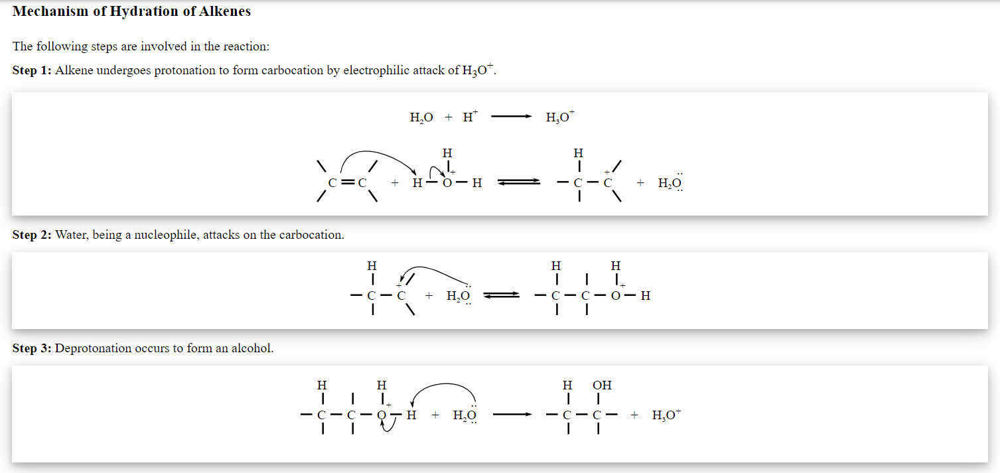
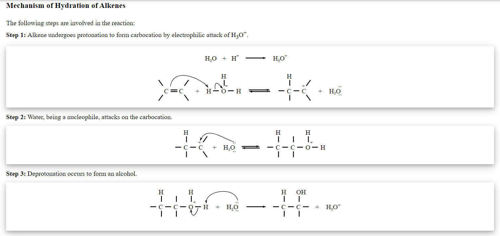
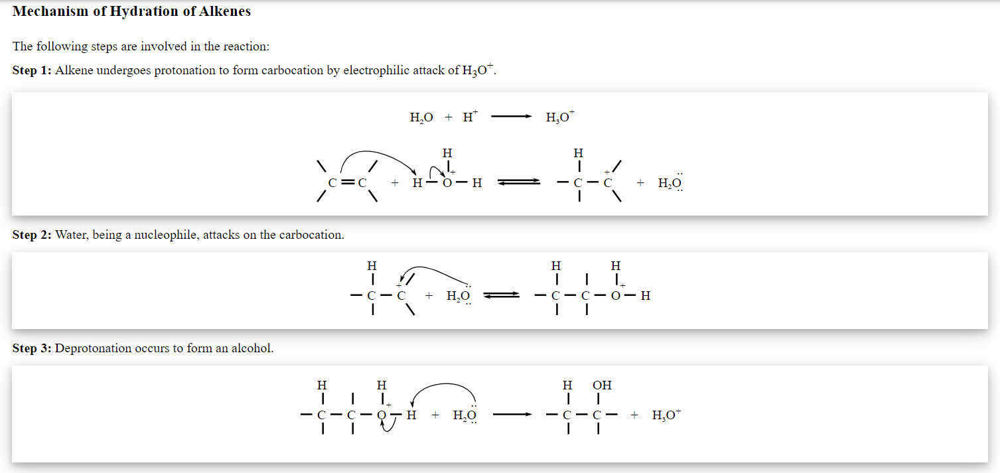

An alcohol can be pictured as having an sp3 hybridized tetrahedral oxygen atom with non-bonding pairs of electrons occupying two of the four sp3 hybrid orbitals. Alkyl groups are generally bulkier than hydrogen atoms, however, so the R―O―H bond angle in alcohols is generally larger than the 104.5° H―O―H bond angle in water.
The general structure of alcohols is R-OH, where R is a side chain that can be an alkyl group, an aryl group and so on. OH is the hydroxyl group, it is composed of an oxygen atom bonding with a hydrogen atom.

Phenol, any of a family of organic compounds characterized by a hydroxyl (―OH) group attached to a carbon atom that is part of an aromatic ring. Besides serving as the generic name for the entire family, the term phenol is also the specific name for its simplest member, monohydroxybenzene (C6H5OH), also known as benzenol, or carbolic acid.
Phenols are similar to alcohols but form stronger hydrogen bonds. Thus, they are more soluble in water than are alcohols and have higher boiling points. Phenols occur either as colourless liquids or white solids at room temperature and may be highly toxic and caustic.